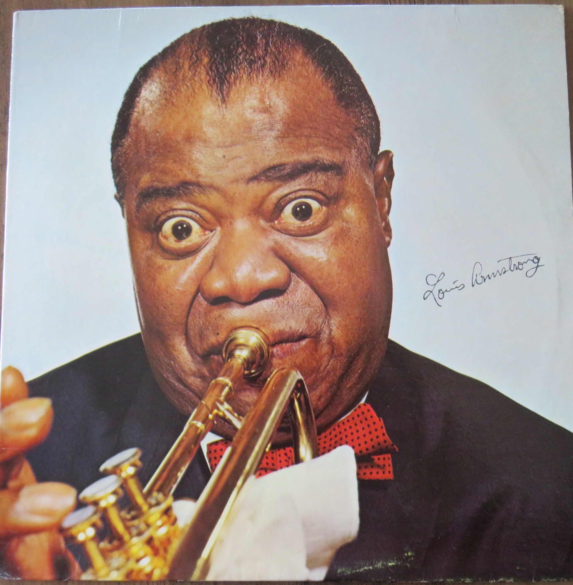
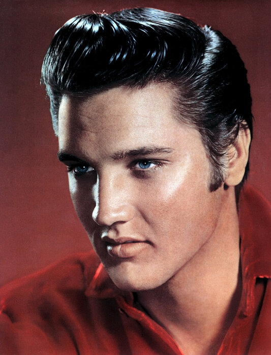
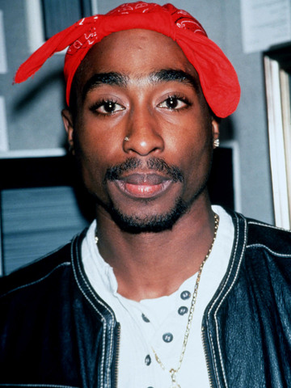
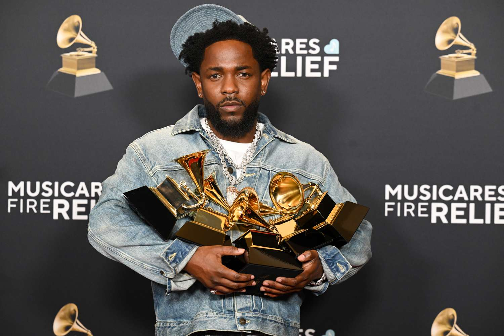

Michael Jackson — Pop
Michael Jackson became one of the biggest global entertainers ever. His music videos, dancing, and performances revolutionized pop music.

Louis Armstrong was one of the most influential jazz musicians of the 20th century. His trumpet playing and singing helped make jazz internationally popular.

Known as the “King of Rock and Roll,” Elvis Presley helped popularize rock music in the 1950s and changed modern pop culture.
Michael Jackson became one of the biggest global entertainers ever. His music videos, dancing, and performances revolutionized pop music.

Tupac used rap music to discuss social inequality, violence, identity, and life in urban America. He became one of hip-hop’s most important voices.

Kendrick Lamar is known for combining storytelling, social commentary, and lyrical complexity in modern hip-hop. His music discusses race, inequality, identity, and politics.

Beyoncé became one of the most influential global artists of the 21st century. Her music and performances focus on empowerment, culture, identity, and artistic innovation.